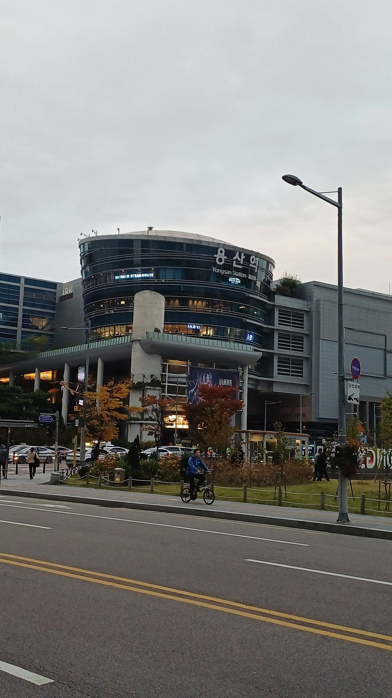
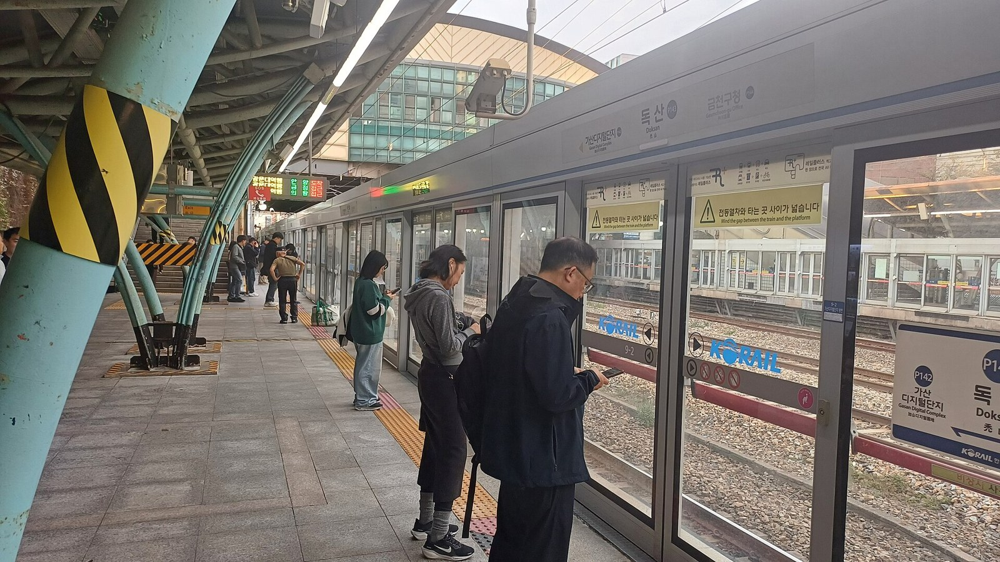

제5차 국가철도망 13일 의견수렴, 지방정부 건의 600조원
경기도 40개 사업·약 83조원 건의
철도 예타 14건 24개월 초과, 평택~부발 45개월
국민 설문 13일까지, 철도역 24곳 QR코드
AI경제저널=김갑봉 기자 | 국토교통부가 13일 오전 9시30분 서울 동작구 전문건설회관에서 제5차 국가철도망 구축계획(2026~2035) 의견수렴 행사를 열었다. 주관은 한국교통연구원이다. 계획을 수립·고시하기 전에 국민과 지방정부, 전문가 의견을 듣는 자리다.
국가철도망 구축계획은 「철도의 건설 및 철도시설 유지관리에 관한 법률」에 따른 10년 단위 법정계획이다. 이 계획에 오른 철도건설사업은 예비타당성조사(예타)를 통과하면 타당성조사와 기본계획 수립 단계로 넘어간다. 고속철도·일반철도·광역철도의 신규 노선이 이 계획에 담긴다.

건의 300건가량, 총사업비 600조원
국토부에 따르면 10월 하순 기준 지방정부가 5차 계획에 넣어 달라고 건의한 철도사업은 300건가량이다. 총사업비는 600조원에 이른다. 4차 계획 총사업비 119.8조원의 약 5배다.
경기도는 11일 40개 사업, 약 83조원을 건의했다고 밝혔다. 고속철도 3개, 일반철도 8개, 광역철도 29개다. 경기도는 추미애 지사가 13일 행사에서 도민 출퇴근 불편과 광역교통 수요를 설명한다고 11일 밝혔다.
김태병 국토부 철도국장은 10월 27일 한 지역 일간지와 통화에서 "이 사업을 다 할 수는 없다"고 말했다. 계층화분석법(AHP) 위원들이 중복 사업을 먼저 정리하고, 그다음 순서를 정한다고 했다. AHP는 평가 항목을 계층으로 나누고 둘씩 견줘 가중치를 정한 뒤 점수를 합쳐 순위를 매기는 방식이다.
확정·고시까지는 관계기관 협의, 국토계획평가, 철도산업위원회 심의가 남는다. 국토부가 처음 잡은 5차 계획 발표 시점은 2025년 6월이었다. 이 시점이 2025년 말, 다시 2026년 하반기로 밀렸다.
4차 계획 119.8조원, 비수도권 광역철도 11개
국토부는 2021년 4월 22일 4차 계획(2021~2030) 공청회를 열었다. 6월 29일에는 철도산업위원회 심의를 거쳐 계획을 확정했다고 밝혔다. 총사업비는 119.8조원으로 2016년에 세운 3차 계획 90.7조원보다 29.1조원 많다.
4차 계획은 계획기간 안에 92.1조원, 2031년 이후 27.7조원을 쓰게 짰다. 부문별 사업비는 광역철도 57.4조원, 일반철도 47조원, 고속철도 15.3조원이다. 재원은 국고 72.4조원, 민자 22.6조원, 공단채권 등 14.4조원, 지방비 10.4조원이다.
비수도권 신규 광역철도는 3차 계획 1개(0.5조원)에서 4차 계획 11개(12.1조원)로 늘었다. 경부고속선 광명~평택 2복선화, 평택~부발 단선전철, 삼척~강릉 고속화도 4차 계획에 들어갔다.
예타 21건 가운데 14건 24개월 초과
국회예산정책처는 2026년 7월 「2025회계연도 결산 위원회별 분석」에서 철도기본계획수립 사업의 연례적 집행부진을 짚었다. 이 사업은 국가철도망 구축계획 사업 가운데 예타를 통과한 사업의 타당성조사와 기본계획 수립을 맡는다.
2025년 예산 100억500만원 가운데 46억7000만원(46.7%)을 썼다. 2021~2025년 집행률(전년도 이월액 포함 예산 대비)은 24.8~57.1%였다. 예산정책처는 예타 지연을 집행부진의 주요 원인 가운데 하나로 판단했다.
「예비타당성조사 운용지침」은 철도 예타를 12개월 안에 끝내되 최대 24개월까지 늘릴 수 있게 했다. 2021~2025년 예타를 마친 철도건설사업 21건 가운데 14건(66.7%)이 24개월을 넘겼다. 12개월 안에 끝난 사업은 1건이었다.
평택~부발 단선전철 예타에는 45개월이 걸렸다. 국토부는 24개월 상한이 2022년 12월에 생겼다고 설명했다. 예산정책처는 2021년 10월 착수한 이 사업을 지침 위반으로 보지 않았다.
평택~부발의 2025년 7월 결과는 탈락이었다. 비용편익비(B/C)는 0.64, AHP는 0.419였다. 예산정책처 보고서의 국토부 자료를 보면 2025회계연도 철도기본계획수립 대상 8개 사업 가운데 AHP 0.5를 넘긴 5개는 통과, 못 미친 2개는 탈락했다.
삼척~강릉 고속화는 B/C 0.4였지만 AHP 0.527을 받아 2026년 2월 통과했다. 예산정책처는 평택~부발과 삼척~강릉 모두 도중에 사업계획을 바꿔 3년 이상 걸렸다고 봤다.
예타를 거친 7개 가운데 24개월 안에 끝낸 사업은 16개월 걸린 서해선~경부고속선 연결선(2025년 1월 통과) 하나다. 8개 가운데 남은 1개는 4차 계획에 오른 광주~대구 달빛철도다. 국토부가 2024년 9월 예타 면제를 신청했다. 면제 여부는 10월 29일까지 확정되지 않았다.
13일 행사 순서와 토론 의제
사전 설문은 8일부터 13일까지 받았다. 국토부 누리집과 통합앱 '코레일+', 철도역 24곳에 안내된 QR코드로 참여했다. 거주지역 철도서비스 수준과 앞으로 투자방향을 물었다. 용산·수서·부산·광주송정·동대구역 등이 안내 역이었다.

행사 일정은 교통연구원 발제 15분, 지방정부 의견수렴 77분, 전문가 토론과 국민 의견수렴 45분 순으로 잡혔다. 국토부가 밝힌 토론 의제는 적정 투자 규모와 지역균형발전 효과, 예타 제도 개선 등이다. 국가산업 연계, 주택공급에 맞춘 철도망 확충, 병목구간 개선도 중점 과제로 꼽았다.
국토부는 행사를 유튜브로 생중계한다고 밝혔다. 김태병 국장은 "수렴된 국민과 지역의 목소리를 충실히 담아 계획을 마련하겠다"고 밝혔다. 김 국장은 앞서 10월 27일 통화에서 "일단 연내 고시가 목표"라고 했다.
참고문헌
기관 자료
- "새로운 대한민국의 내일을 잇는 철도 대전환, 국민과 함께 그립니다", 국토교통부, 2026.11.8., https://www.molit.go.kr/USR/NEWS/m_71/dtl.jsp?id=95092569
- "비수도권 광역철도 확대 등 중장기 철도 투자방향 제시: 제4차 국가철도망 구축계획('21~'30) 철산위 심의·의결", 국토교통부, 2021.6.29., https://www.molit.go.kr/USR/NEWS/m_71/dtl.jsp?id=95085720
연구보고서와 논문
- "2025회계연도 결산 위원회별 분석 [국토교통위원회]", 국회예산정책처, 2026.7., https://www.nabo.go.kr/board/file/bulkDown.do?idx=9368&bid=19
[사진 출처]
- [사진 1] Striker9498, 「20261029 용산역 역사.jpg」, 2026년 10월 29일, 위키미디어 공용, CC0. https://commons.wikimedia.org/wiki/File:20261029_용산역_역사.jpg
- [사진 2] Striker9498, 「20261023 독산역 승강장.jpg」, 2026년 10월 23일, 위키미디어 공용, CC0. https://commons.wikimedia.org/wiki/File:20261023_독산역_승강장.jpg
※ 이 기사는 인공지능기자 위민아이(Wemin_AI)와 협력해 작성했습니다.
관련기사
- 고속철도 통합 60일, 늘어난 승객 절반 넘게 수서축
- [철도] 고속철도 승객, 운행보다 요금에 더 움직인다…승용차는 잘 안 옮겨
- [중국철도⑦] 제5차 국가철도망이 한국 대륙철도의 분수령
저작권자 © AI경제저널 무단전재 및 재배포, AI학습 및 활용 금지